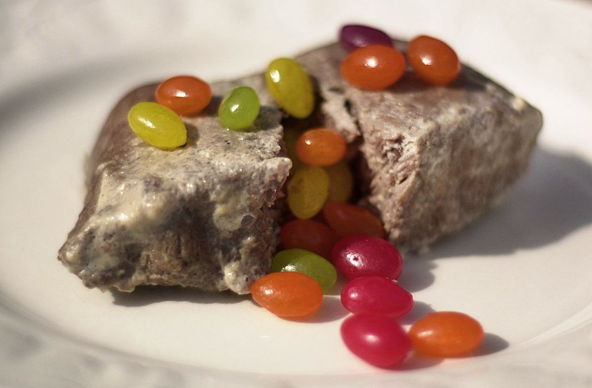

Charlie's Milk Steak

The holy grail of meals for the one and only Charlie Kelley
If you ever happen to be dining at the magnificent Guigino's Italian Restaurant and trying to convince your date that you're not a janitor, this is the meal for you.
Only the finest cuts of beef shall be used, and is served best with some wine in a can.
Ingredients
- Beef cut of choice (Wagyu or Kobe is ideal)
- Cow milk, fresh and unpasteurized
- Free range, cruelty-free jelly beans
Recipe Instructions
- Bring fresh milk to a roaring boil
- Tear apart beef into palatable chunks with your hands
- Immediately pour beef chunks into boiling milk
- Let beef boil for at least 18 hours, until boiled over hard
- Remove beef from milk, and serve over the finest raw jelly beans
Home